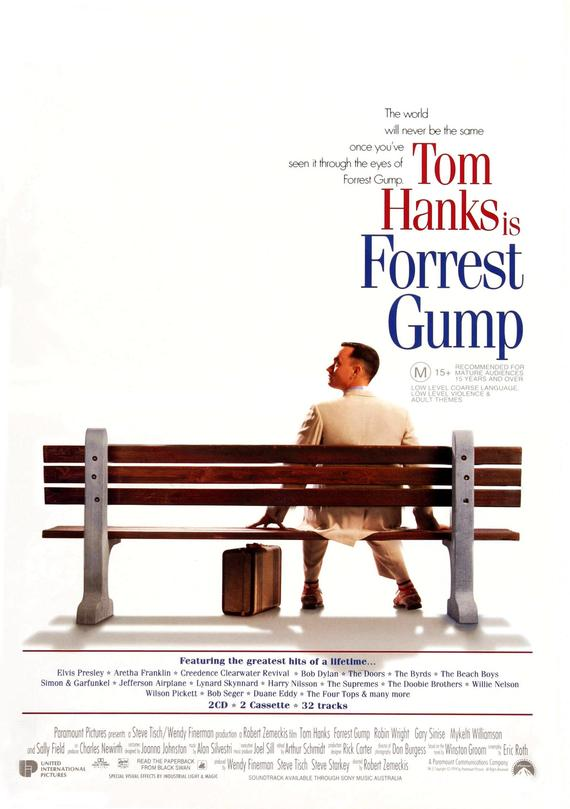
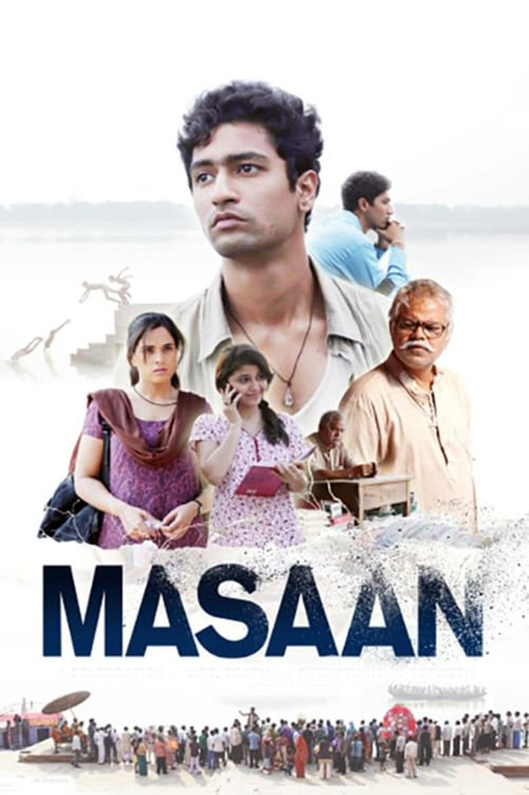

Schindler's List
War/Drama
Oskar Schindler, a German industrialist and member of the Nazi party,
tries to save his Jewish employees after witnessing the persecution of Jews in Poland.

Forrest Gump
Drama/Romance
Forrest, a man with low IQ, recounts the early years of his life when he found himself in the middle of key historical events.
All he wants now is to be reunited with his childhood sweetheart, Jenny.

Masaan
Drama/Romance
In Varanasi, Devi struggles to shake off the social stigma of pre-marital sexual relations.
Meanwhile, lovers Deepak and Shalu attempt to transcend the restrictions of their casteist society.